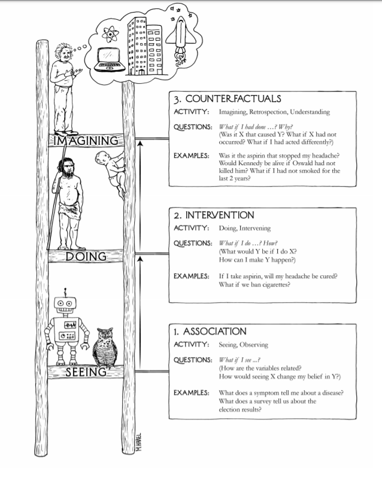

Motivation
We’ve seen how the language of causality require an exogenous intervention on the values of \(X\); so far we’ve studied interventions on all the population, represented by the expression \(do(X)\). Nevertheless, with this language, there are plenty of interventions that remain outside our realm: most notably, counterfactual expressions where the antecedent is in contradiction with the observed behavior: there’s a clash between the observed world and the hypothetical world of interest.
To solve this conundrum we will need to set up a more elaborate language whereby we leverage the invariant information from the observed world into the hypothetical world.
These type of counterfactual queries are fundamental in our study of causality; as they enable us to answer such questions as: interventions on sub-populations; additive interventions; mediation analysis through ascertaining direct and indirect effects; and to study probability of causation (sufficient and necessary causes).
In this post, all citations come from Pearl’s book: Causality.
Game Plan
In this blogpost, we will define Structural Causal Models (SCM) and explore how they encapsulate all the information we need in order to study counterfactuals. First, we’ll analyze why we cannot use the do-calculus to study counterfactuals where the antecedent contradicts the observed world. Secondly, we will define counterfactuals as derived properties of SCM and realize how interventional data undetermines counterfactual information. Thirdly, we will formulate a SCM to put what we have learned into action.
We change by taking the road less traveled by
Let’s play with Frost’s famous poem:
Two roads diverged in a wood, and I— I took the one less traveled by, And that has made all the difference.
What if Frost hadn’t taken the road less traveled by? Let’s say that by taking the road less traveled by, it took Frost \(Y=1\) hour of driving time. Given how long it took him on the road less traveled by, how long would it had taken him on the other road?
\[ E[ Y| \ \text{do(Other road)}, Y = 1] \] There’s a clash between the \(Y\) we are trying to estimate and the observed \(Y = 1\). Unfortunately, the do-operator does not offer us the possibility of distinguishing between the two variables themselves: one standing for the \(Y\) if we take the road less traveled by, the other \(Y\) for the hypothetical \(Y\) if Frost had taken the other road. That is, the different \(y\)’s are events occurring in different worlds.
Because the do-calculus offers no way of connecting the information across the different worlds, it means that we cannot use interventional experiments to estimate the counterfactuals. Indeed, the Frost after taking the road less traveled by is a very different Frost than he was before taking any of the roads.
The Ladder of Causation
Before, we had seen that observational information is not enough to distinguish between different causal diagrams. We’ll show that the same thing happens with counterfactuals: information from interventions is not enough to distinguish between different Structural Causal Diagrams. Indeed, prediction, intervention and counterfactuals represent a natural hierarchy of reasoning tasks, with increasing levels of refinement and increasing demands on the knowledge required to accomplish them. Pearl calls this hierarchy the Ladder of Causation:

Whereas for prediction one only needs a joint distribution function, the analysis of intervention requires a causal structure; finally, processing counterfactuals requires information about the functional relationships that determine that determine the variables and/or the distribution of the omitted factors. We will encode all this necessary information with Structural Causal Models (SCM).
Defining Counterfactuals
A Structural Causal Model is a triplet of Unobserved Exogenous Variables (\(U\)) called background variables, Observed Endogenous Variables (\(V\)) and Functional relationships (\(F\)) that map for each \(V_i\) from their respective domain \(U_i \cup Pa_i\) (\(Pa_i\) are the parents of \(i\)) into \(V_i\) thus:
\[ v_i = f_i(Pa_i, u_i) \]
Every SCM can be associated with a causal DAG. However, the graph merely identifies the endogenous and background variables; it does not specify the functional form of \(f_i\) nor the distribution of the background variables.
A counterfactual is defined by a submodel, \(M_x\), where the the functional relationship for \(X\) is replaced to make \(X=x\) hold true under any \(u\). Thus, the potential response of \(Y\) to action \(do(X=x)\) denoted by \(Y_x(u)\) is the solution for \(Y\) on the set of equations \(F_x\) in \(M_x\).
If we define a probability function over the background variables, \(P(u)\), we can define the probability over the endogenous variables thus:
\[ P(Y = y) := \sum_{u | Y(u) = y} P(u) \]
Therefore, the probability of counterfactual statements is thus derived:
\[ P(Y_x = y) := \sum_{u | Y_x(u) = y} P(u) \]
Note that we can define \(P(Y = y | do(X=x)) = P(Y_x = y)\). This solution to the SCM coincides with the truncated factorization obtained by pruning arrows from a causal DAG.
Connecting different worlds through background variables
The determining feature of most counterfactuals is that we are interested in a conditional probability such that the information we are updating on is in contradiction with the counterfactual antecedent. In math terms:
\[ P(Y_{x'} = y' | X = x, Y = y) = \sum_u P(Y_{x'}(u) = y') P(u | x, y) \] First, notice that we are using the information from one causal world (\(<M, u>\)) where we observe \((X=x, Y = y)\) to find out the probability of a statement \(Y_x\) in a different causal world (\(<M_x, u>\)). That is, the counterfactual antecedent “must be evaluated under the same background conditions as those prevailing in the observed world”.
“The background variables are thus the main carriers of information from the actual world to the hypothetical world; they serve as the guardians of invariance.” To do so, we must first update our knowledge of \(P(u)\) to obtain \(P(u|x, y)\). Therefore, to be able to answer counterfactual queries we must have a distribution for the background variables. Indeed, this key step is known as abduction: reasoning from evidence (\((x, y)\) observed) to explanation (the background variables).
This is the fundamental characteristic counterfactual statements: we need to route the impact of known facts through U”.
After abduction comes action and prediction
Once we have evaluated the prevailing background conditions, we use these in the sub-model \(M_{x'}\), where \(x'\) is the antecedent of the counterfactual. Finally, we use the equations in this modified SCM to predict the probability of \(Y_{x'}\), the consequence of the counterfactual.
Pearl has a great temporal metaphor for this whole process:
Abduction explains the past (U) in light of the current evidence. The action bends the course of history to comply with the hypothetical condition \(X= x'\). Finally, we predict the future based on our new understanding of the past and our newly established condition, \(X=x'\).
Probabilities for the dead
Let’s formulate the following example that will show why information from interventions undetermines counterfactuals and that will serve as practice in computing counterfactuals. The example is taken from the excellent paper from Bareinboim (et alter) (PDF):
Let ( ^{}=={U_{1}, U_{2}}, ={X, Y}, ^{}, P(U), ) where [ ^{*}={ \[\begin{array}{ll} X & \leftarrow U_{1} \\ Y & \leftarrow U_{2} \end{array}\]. ]
and \(U_1, U_2\) are binary.
Notice that we expect that any intervention will lead us to conclude that the treatment \(X\) is not effective: \(P(Y| do(X)) = P(Y)\). Suppose that we conclude exactly this with a RCT.
Is this intervention evidence enough to argue for \(\mathcal{M}^{*}\)? No! Interventional information undetermines counterfactual information. Notice that other SCM, \(\mathcal{M}^{'}\), is also consistent with such causal effects and yet leads to a different counterfactual answer:
\[ \mathcal{F}^{\prime}=\left\{\begin{array}{ll} X & \leftarrow U_{1} \\ Y & \leftarrow X U_{2}+(1-X)\left(1-U_{2}\right) \end{array}\right. \]
In both \(\mathcal{M}^{'}\) and \(\mathcal{M}^{*}\), we expect an intervention on \(X\) to lead to no causal effect: \(P(Y| do(X)) = P(Y)\).

However, notice that they lead to very different answers for counterfactual queries. Suppose, then, that you have a patient \(S\) that took the treatment and died: what is the probability that ( S ) would have survived had they not been treated? We write this as ( P(Y_{X=0}=1 X=1, Y=0), )
In ( ^{}, ) we have ( P{{}}(Y_{X=0}=1 X=1, Y=0)=0, ) whereas in ( ^{} ) we have the exact opposite pattern, ( P{{}}(Y_{X=0}=1 X=1, Y=0)=1 ). These two models thus make diametrically opposed predictions about whether ( S ) would have survived had they not taken the treatment.
In other words, the best explanation for ( S ) ’s death may be completely different depending on whether the world is like ( ^{} ) or ( ^{} ). In ( ^{}, S ) would hav died anyway, while in ( ^{}, S ) would actually have survived, if only they had not been give the treatment.
Conclusions
Counterfactual queries are a crucial part of our reasoning tools. Yet they pose a fundamental challenge: most of the time, the counterfactual antecedent contradicts the observed evidence. Thus, creating a clashing of worlds between the observed world and the hypothetical world that is our object of study.
To reconcile these two worlds, we must posit a SCM that leverages the invariant information across causal worlds: the background variables. Once we have this information, we can answer counterfactual queries. Finally, we saw how interventional information is far from being sufficient to deliver answer to these queries.